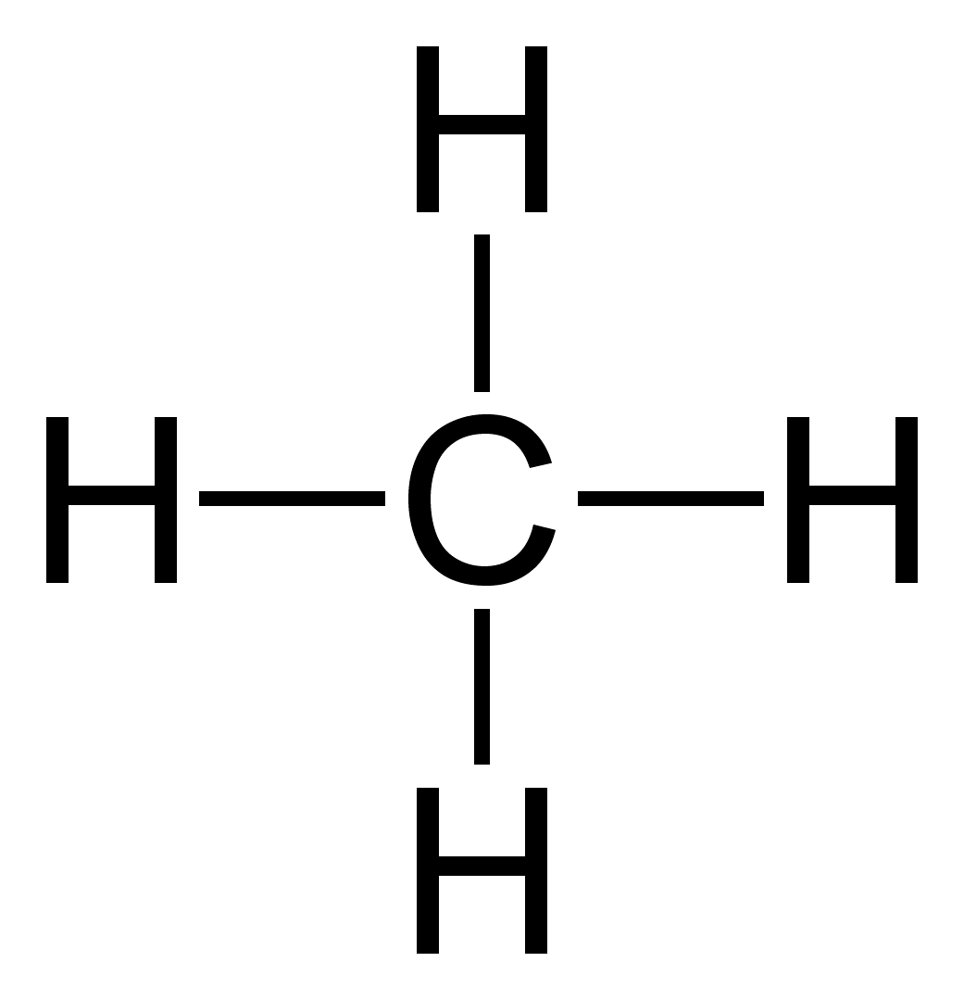
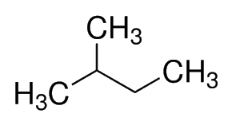

N omenclature
The Process
The process of naming alkanes follows a strict ruleset (IUPAC naming). First, find the longest carbon chain, and count the number of carbons up. Use this number for the end of the name and use the appropraite prefix. Then, find the carbons that come off the main chain (side chains), count how many carbons are in each side chain. Use each of these numbers to find the prefix of the side chains (that end in -yl). If there is multiple side chains of the same amount of carbons, put them under on prefix + -yl section and add another prefix before it for the amount of them there is. Lastly, before each prefix + -yl section naming the side chains, place the number of what carbon in the main chain the specific side chain comes off of. The numbering of the carbon main chain molecules should start from where the first number in the name would be the lowest. Every section and number is connected by dashes and the names of alkyl groups (side chains) are done in alphabetical order.
...-(# off the main chain)-(main chain carbon # prefix)(# of carbons in side chain prefix)yl-(# of carbons in main chain prefix)ane
...-2-diethyl-pentane (or 2-diethylpentane, you can put the last side chain and main chain names together)
Prefix # Off Main Chain NONE 1 Di- 2 Tri- 3 Tetra- 4 Penta- 5 Hexa- 6 Hepta- 7 Octa- 8 Nona- 9 Deca- 10 Prefix Carbons in Side/Main Chain Meth- 1 Eth- 2 Prop- 3 But- 4 Pent- 5 Hex- 6 Hept- 7 Oct- 8 Non- 9 Dec- 10 (Use Iso- before the main chain section if it ends with CH(CH3)2, or Neo- with C(CH3)3)
 Methane
 2-Methylbutane
3-Ethyl-2,5-Dimethylhexane (Theres two places with methyl!)
 Cyclohexane (Cyclo- is a prefix used for
Cyclohexane (Cyclo- is a prefix used for
cyclic compounds, the cylic structures are ALWAYS the main chain, and have the formula CnH2n!)
B ack